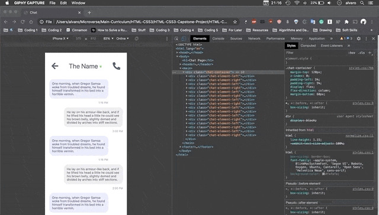
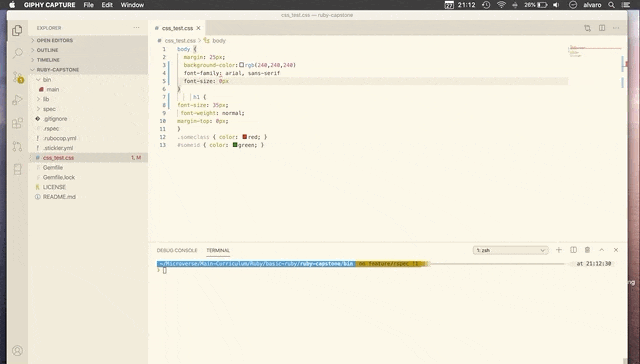
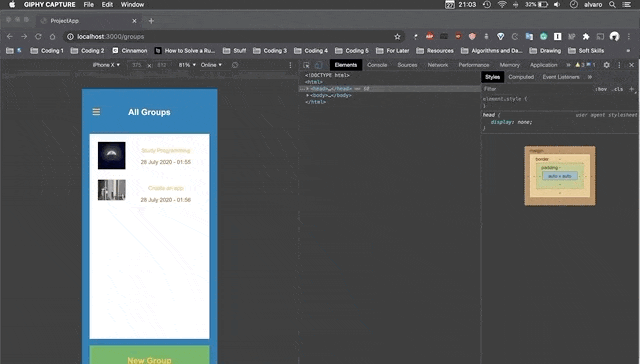

Dating App (Microverse HTML & CSS Capstone Project)
A template for a dating app developed entirely on HTML5 and CSS3. It features extensive use of flexbox and grids. It's a fully responsive site.

CSS Linter (Microverse Ruby Capstone Project)
A basic linter script to check syntax errors on .css files. It builds upon the concepts of OOP and Ruby best practices.

Project Tracker (Microverse Ruby on Rails Capstone Project)
An app to track projects and different activities. You can group these activities into groups. It supports multiple users.
 Phaser-based RPG app (Microverse JavaScript Capstone Project)
Phaser-based RPG app (Microverse JavaScript Capstone Project)
An RPG app inpired by The Legend of Zelda and Pacman. It features a custom map and a leaderboard.